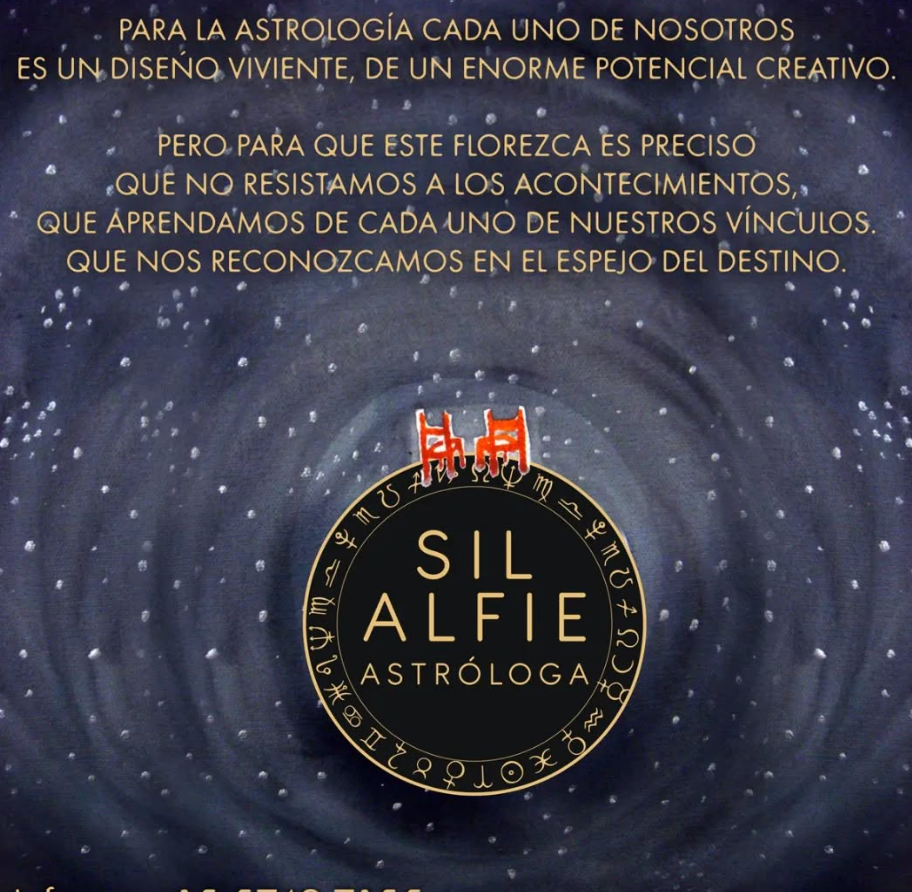
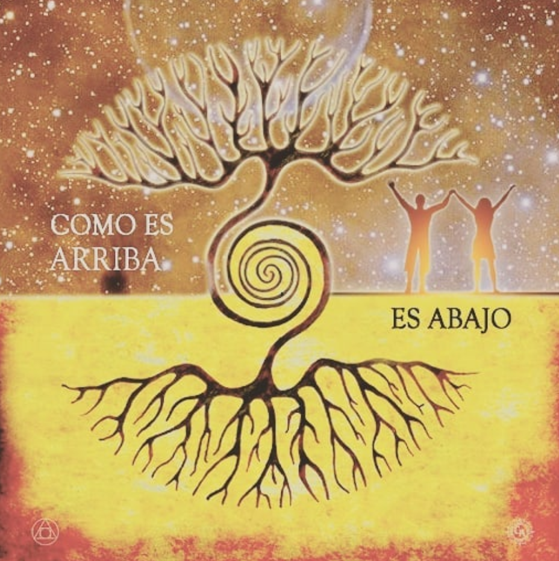
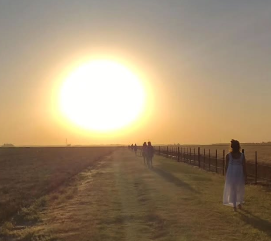
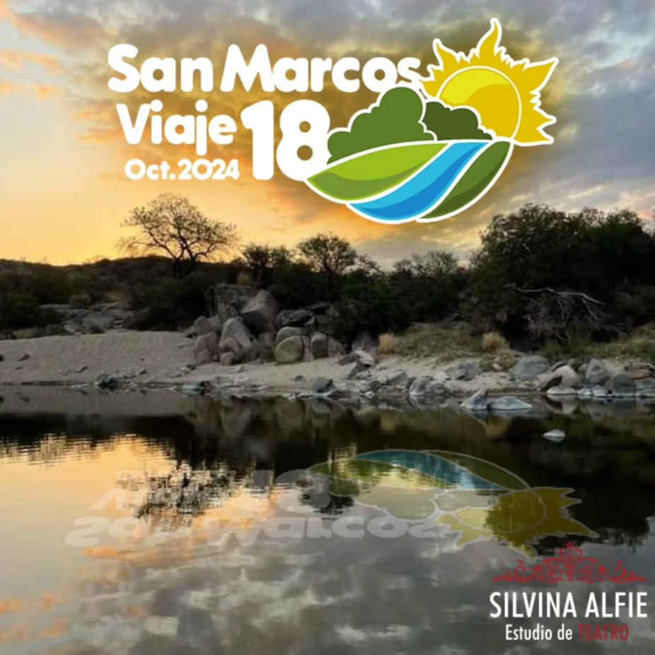
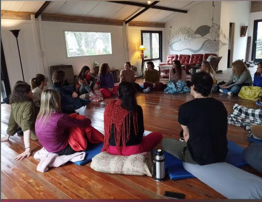
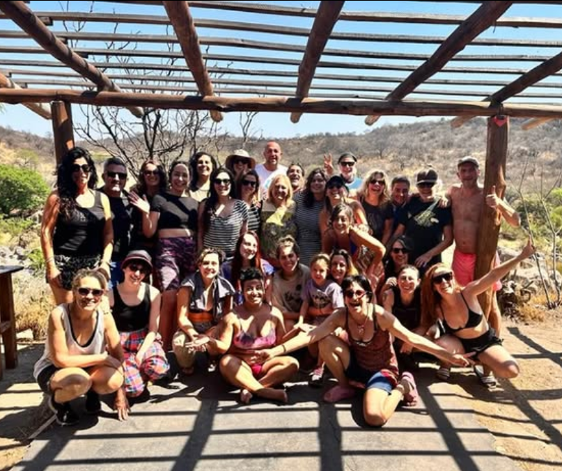

🎭 NOVEDADES
SOBRE MI
SILVINA ALFIE

Estudié teatro en mi país con diversos maestros, Lorenzo Quinteros , Ricardo Bartis , Pino Solanas, Rubén Schumacher, entre otros. Además de vivenciar el encuentro con maestros en Brasil, India e Italia. Paralelamente mis estudios se enriquecieron con expresión corporal, danza, contact, trabajos con la voz, canto, clown, dramaturgia y puesta en escena. Siempre busqué herramientas para transformar a través de la creación y la expresión. En la India inicie mi práctica en yoga y en Malasia artes marciales. Entrené Pakua, Tai chi, Chi Kung, bioenergía y visualizaciones guiadas. Practico yoga, meditación, soy reikista. Estudié PNL, constelaciones familiares y psicodrama.
Desde hace mas de 15 años soy astróloga. Me recibí en “Casa XI”, luego hice postgrados y participé en grupos de estudios en "Casa XI" y en "Red Luna Venus". Además de atender en consultorio privado, desarrollo un método tejiendo el encuentro entre la astrología y el teatro.
Como docente cree mi escuela de teatro hace 20 años, para adultos, niños y adolescentes. Desde entonces y cada año vamos dando vida a distintos grupos que van desarrollando su aprendizaje y experiencia desde distintos contenidos.
He participado en numerosos trabajos junto a directores reconocidos y también realizando mis propios espectáculos teatrales, obras, infantiles, varieté, teatro callejero, etc. Realicé giras por el interior del país. Participé en giras internacionales, trabajando en Lima, Perú; Madrid, Barcelona, España; Padova, Roma, Messina, distintos pueblos de Sicilia, Italia, ofreciendo espectáculos así como talleres y workshop intensivos. Trabajo junto al “Teatro dei Naviganti” de Messina, Italia, tanto en Argentina como en Italia.
He participado en numerosos trabajos junto a directores reconocidos y también realizando mis propios espectáculos teatrales, obras, infantiles, varieté, teatro callejero, etc. Realicé giras por el interior del país. Participé en giras internacionales, trabajando en Lima, Perú; Madrid, Barcelona, España; Padova, Roma, Messina, distintos pueblos de Sicilia, Italia, ofreciendo espectáculos así como talleres y workshop intensivos. Trabajo junto al “Teatro dei Naviganti” de Messina, Italia, tanto en Argentina como en Italia.
Soy Directora general del FOC, Festival de Obras Cortas que ya lleva 8 temporadas.
Desde hace 18 años, realizo laboratorios y retiros intensivos, combinando y experimentando el encuentro de la naturaleza con el teatro, la astrología, en San marcos Sierra, Córdoba, Mar de las Pampa, Tigre, San Pedro, Mar del Plata, entre otros lugares.
Desde hace más de 15 años trabajo realizando capacitación empresarial utilizando técnicas teatrales, para empresas, organizaciones y grupos.
ESCUELA DE TEATRO
Sobre las clases: Trabajamos desde los 4 elementos que forman el universo, que nos conectan con los distintos cuerpos necesarios para el trabajo del actor y de la actriz en el espacio escénico: Fuego: cuerpo energético. Tierra: cuerpo físico Aire: cuerpo mental Agua: cuerpo emocional En la particularidad de cada uno de los ejercicios físicos, vocales, energéticos, juegos teatrales, improvisaciones, se trabajará sobre principios del arte del actor.
Entrenamientos internos: A través de ejercicios energéticos de chi Kung, meditaciones, donde la energía comienza a circular por el cuerpo se experimentar la presencia, transitar el aquí y ahora, sentir el cuerpo vivo, la presencia en el detalle, encontrar el propio ritmo, la respiración, el permanecer, el ser conciencia, limpiar las capas para descubrir lo verdadero, relajar, pertenecer, movimiento de la energía en el cuerpo.
Entrenamientos externos: A través de ejercicios improvisaciones y juegos teatrales comprometiendo el cuerpo la expresión corporal, comienza a circular la forma en el cuerpo, encontrar el propio ritmo, la variación el ritmo escénico, la musicalidad de la acción, el silencio, el sostener, la forma teatral, la dramaturgia del cuerpo del actor, el cambio, soltar la expresión, el cuerpo que sugiera, que manifieste, que hable, que diseñe en el espacio.
Improvisaciones: El cuerpo, el alma, la esencia del actor están en movimiento buscando recorridos que no sean los cotidianos. Atravesar el vacío, jugar, experimentar el instante. El impulso como generador creativo. Ejercicios teatrales destinados a conectar con el impulso vital.
Obras de texto: Transitar el proceso creativo de la puesta en escena experimentando el abordaje de un texto teatral. La creación del personaje, el espacio escénico, el vestuario, el trabajo con los objetos, la escenografía, la música, todas las artes combinadas que se incorporan para enriquecer al teatro.

TALLERES ANUALES MARZO-DICIEMBRE 2025
Para jóvenes y adultos desde 20 años en adelante.
-Grupos diferentes en diversos días y horarios. -Propuestas para personas sin experiencia, con experiencia en otros lenguajes de actuación y avanzados. -Entrevista: armamos un encuentro para conocerte y sugerirte grupo.
PARA MAS INFORMACIÓN: Entrevistas e inscripciones a silalfie@gmail.com
 11
5749-7155
11
5749-7155
TALLERES ANUALES ABRIL-DICIEMBRE 2025
Para Chicos de 11 a 15 años.
Un espacio de juego e improvisación para chicos de 11 a 15 años, donde explorarán el movimiento corporal y la expresión verbal. A través de ejercicios teatrales y juegos escénicos, potenciarán la imaginación, expresarán emociones, ganarán confianza y vivirán el encuentro con otros desde un vínculo creativo. Se realiza una entrevista previa para conocer al chico/a y a su familia.
PARA MAS INFORMACIÓN: Entrevistas e inscripciones a silalfie@gmail.com
11
5749-7155
TALLERES ESPECIALES O INTENSIVOS
Durante el año realizamos talleres especiales de un día o de algunos días, donde se trabaja sobre alguna temática en particular, relacionados al teatro, a la astrología, meditaciones, rituales, etc. También ofrecemos estos mismos encuentros en la naturaleza.
PARA MAS INFORMACIÓN: Entrevistas e inscripciones a silalfie@gmail.com
11
5749-7155
MUESTRAS FUNCIONES
En algunos meses del año y durante el mes de noviembre y diciembre tenemos una temporada de funciones y muestras sobre el trabajo del año, donde los alumnos/as experimentan el encuentro con los espectadores y el ritual teatral se completa. Improvisaciones, creaciones colectivas, escenas teatrales, monólogos, obras cortas, obras largas, entre otras.
PARA MAS INFORMACIÓN: Entrevistas e inscripciones a silalfie@gmail.com
11
5749-7155
TEATRO EN EMPRESAS/ORGANIZACIONES/GRUPOS
La experiencia desde el juego teatral permite la exploración de emociones, pensamientos y acciones a través de la representación de diferentes roles y situaciones. Promueve la autoexpresión, la creatividad, el trabajo en equipo y la reflexión, favoreciendo la construcción de identidad, la comunicación efectiva y el fortalecimiento de la confianza. Además, facilita la integración social y la construcción de una comunidad basada en el respeto y la colaboración. El juego teatral es una puerta abierta a la transformación y al descubrimiento de uno mismo y del mundo que nos rodea.
PARA MAS INFORMACIÓN: Entrevistas e inscripciones a silalfie@gmail.com
11
5749-7155
ASTROLOGÍA

La astrología, a través del lenguaje sagrado, nos abre la percepción al sentido de nuestra existencia, vibrando con el viaje del alma en esta vida. Es un mapa del cielo en el momento en que nacimos. Un mapa de energías donde uno es el vehículo. La astrología nos permite entrenar la percepción, la participación de la conciencia, los hilos invisibles de la trama de la vida y descubrir el diseño cósmico que nos habita. Desde el nivel energético, pasando por el psicológico hasta llegar a la materialización de nuestra vida. Como es arriba es abajo, como es adentro es afuera.
CARTA NATAL
A partir de la foto del cielo en el momento que nacemos, reflexionamos, a través del lenguaje simbólico, cómo es tu mapa, tu adn energético.
Consultas e inscripcion: silalfie@gmail.com
REVOLUCION SOLAR
En la fecha de tu cumpleaños vemos una nueva carta que te va acompañar hasta el próximo año. Nos muestras las energías disponibles para este año.
Consultas e inscripcion: silalfie@gmail.com

TRÁNSITO, CICLOS Y PROCESOS
Miramos cómo está el cielo y sus movimientos planetarios en este momento, vinculándolo con tu carta natal y reflexionando sobre sus invitaciones.
Consultas e inscripcion: silalfie@gmail.com
SEGUIMIENTOS
Mes a mes trabajamos con tu carta desde distintos ejercicios para seguir destrabando y desplegando su potencial.
Consultas e inscripcion: silalfie@gmail.com
SINASTRIA
Conocemos las energías de tu carta natal junto con la de tu hijo/hija, pareja, amigo/a o algún familiar, entendiendo los puntos en común y las distancias entre ambas cartas y cuáles son los aprendizajes para el vínculo.
Consultas e inscripcion: silalfie@gmail.com
TALLERES
A través de tu propia carta natal, un espacio para aprender astrología desde la experiencia directa.
Consultas e inscripcion: silalfie@gmail.com

ASTROLOGIA Y TEATRO
A partir del teatro vamos poniendo en escena y entendiendo la carta natal.
Consultas e inscripcion: silalfie@gmail.com
VIAJES/RETIROS
Un retiro es una pausa necesaria. Nos convoca un anhelo de reconectar con nosotros mismos y una búsqueda de lo natural. Es una experiencia compartida, aprendiendo del contacto grupal y una aventura interior a la vez.
Profundizamos sobre el lenguaje que nos relaciona a los elementos que constituyen el universo, fuego, tierra, aire y agua, y nos ayudan a comprender las personalidades que encarnamos, capas que nos forman, nos construyen. Nos sumergimos al cuerpo presente, al hoy y al ahora.
Con las distintas herramientas que nos orientan: desde el teatro conectamos con el canal creativo, expresivo y de juego, desde la astrología con el vínculo viviente entre el cielo y la tierra, y en contacto con la naturaleza que nos entrega tanta sabiduría, siendo la gran maestra de la sanación.
A lo largo de estos 20 años los retiros fueron en San Marcos Sierras, Córdoba; Mar de las Pampas, Mar del Plata; Merlo, San Luis; Tigre, San Pedro, Capilla del Señor, Exaltación de la Cruz, entre otros.
En el 2025 realizaremos el viaje número 19 “Teatro y naturaleza” en San Marcos Sierras, Córdoba


